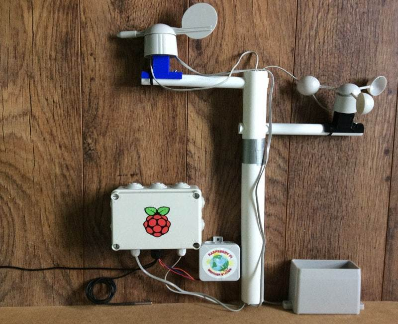

Raspberry Pi — одноплатный компьютер размером с банковскую карту, изначально разработанный как бюджетная система для обучения информатике, но позже получивший более широкое применение и известность. На данный момент, индустрия техники очень сильно развивается. В каждом телефоне есть свой крохотный компьютер, который может выполнить практически все функции, необходимые человеку в 2021 году. Но некоторые функции сложно адаптировать под ОС, предустановленную на наших телефонах. И Raspberry Pi может очень сильно помочь с задачами, которые не может выполнить простой телефон.
характеристика платБлагодаря различным операционным системам, и некоторым модулям, которые можно подключить к плате, люди создают метеостанции, видеоплееры, FM-станции, игровые консоли для игр прошлого века, и огромное количество других вещей, которые не может сделать обычная бытовая техника.
Начало
Я решил попробовать создать свой сервер для игры, чтобы другие пользователи могли поиграть вместе благодаря этой платформе. Для создания этого проекта я буду использовать Raspberry Pi 4 model B, и MicroUsb на 16гб (в случае если не хватит, я буду расширять эту память).
Итак, для начала мне нужно было обновить саму плату этой коммандой:
sudo apt-get update && sudo apt-get -y upgrade
После чего, я установил среду окружения, и язык Java:
java -version javac –version
после некоторых других комманд я настроил дерикторию для автосохранения прочих плагинов, загрузил основную сборку для комфортной игры, и перезагрузил Raspberyy Pi. При перезагрузке у меня начал генерироваться мир: 
так как это быа первая установка, вся загрузка всех плагинов длилась не менее 5-ти часов, но зато в конце я успешно смог подключится к серверу, и играть на нем вместе с друзьями